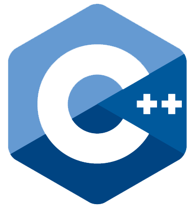

| Logo |
descripcion |

|
"C#" (pronunciado 'si sharp' en inglés) es un lenguaje de programación multiparadigma desarrollado y
estandarizado por la empresa Microsoft como parte de su plataforma .NET, que después fue aprobado
como un estándar por la ECMA (ECMA-334) e ISO (ISO/IEC 23270). C# es uno de los lenguajes de
programación diseñados para la infraestructura de lenguaje común. Wikipedia |

|
Java es un lenguaje de programación y una plataforma informática que fue comercializada por primera
vez en 1995 por Sun Microsystems. Hay muchas aplicaciones y sitios web que no funcionarán,
probablemente, a menos que tengan Java instalado y cada día se crean más. Java es rápido, seguro y
fiable. Desde ordenadores portátiles hasta centros de datos, desde consolas para juegos hasta
computadoras avanzadas, desde teléfonos móviles hasta Internet, Java está en todas partes, si es
ejecutado en una plataforma no tiene que ser recompilado para correr en otra. Java es, a partir de
2012, uno de los lenguajes de programación más populares en uso, particularmente para aplicaciones
de cliente-servidor de web, con unos diez millones de usuarios reportados. Java |

|
Python es un lenguaje de programación interpretado cuya filosofía hace hincapié en la legibilidad de
su código. Se trata de un lenguaje de programación multiparadigma, ya que soporta parcialmente la
orientación a objetos, programación imperativa y, en menor medida, programación funcional. Es un
lenguaje interpretado, dinámico y multiplataforma.
Administrado por la Python Software Foundation, posee una licencia de código abierto, denominada
Python Software Foundation License. Python se clasifica constantemente como uno de los lenguajes
de programación más populares.Wikipedia |

|
Ruby es un lenguaje de programación interpretado, reflexivo y orientado a objetos, creado por el
programador japonés Yukihiro "Matz" Matsumoto, quien comenzó a trabajar en Ruby en 1993, y lo
presentó públicamente en 1995. Combina una sintaxis inspirada en Python y Perl con características
de programación orientada a objetos similares a Smalltalk. Comparte también funcionalidad con otros
lenguajes de programación como Lisp, Lua, Dylan y CLU. Ruby es un lenguaje de programación
interpretado en una sola pasada y su implementación oficial es distribuida bajo una licencia de
software libre. Wikipedia |

|
SQL es un lenguaje de computación para trabajar con conjuntos de datos y las relaciones entre ellos.
Los programas de bases de datos relacionales, como Microsoft Office Access, usan SQL para trabajar
con datos. A diferencia de muchos lenguajes de computación, SQL no es difícil de leer y entender,
incluso para un usuario inexperto. Al igual que muchos lenguajes de computación, SQL es un estándar
internacional reconocido por organismos de estándares como ISO y ANSI. Microsoft
support |

|
Swift es un lenguaje de programación multiparadigma creado por Apple enfocado en el desarrollo de
aplicaciones para iOS y macOS. Fue presentado en la WWDC 2014 y está diseñado para integrarse con
los Frameworks Cocoa y Cocoa Touch; puede usar cualquier biblioteca programada en Objective-C y
llamar a funciones de C. También es posible desarrollar código en Swift compatible con Objective-C
bajo ciertas condiciones. Swift tiene la intención de ser un lenguaje seguro, de desarrollo rápido y
conciso. Usa el compilador LLVM incluido en Xcode 6. Fue presentado como un lenguaje propietario,
pero en el año 2015, con la versión 2.2, pasó a ser de código abierto con la Licencia Apache 2.0.
Wikipedia
|

|
Visual Basic .NET (VB.NET) es un lenguaje de programación orientado a objetos que se puede
considerar una evolución de Visual Basic implementada sobre el framework .NET. Su introducción
resultó muy controvertida, ya que debido a cambios significativos en el lenguaje VB.NET no es retro
compatible con Visual Basic, pero el manejo de las instrucciones es similar a versiones anteriores
de Visual Basic, facilitando así el desarrollo de aplicaciones más avanzadas con herramientas
modernas. Para mantener eficacia en el desarrollo de las aplicaciones. La gran mayoría de
programadores de VB.NET utilizan el entorno de desarrollo integrado Microsoft Visual Studio en
alguna de sus versiones (desde el primer Visual Studio .NET hasta Visual Studio .NET 2019, que es la
última versión de Visual Studio para la plataforma .NET), aunque existen otras alternativas, como
SharpDevelop (que además es libre). Wikipedia |
|

|
C++ es un lenguaje de programación diseñado en 1979 por Bjarne Stroustrup. La intención de su
creación fue extender al lenguaje de programación C mecanismos que permiten la manipulación de
objetos. En ese sentido, desde el punto de vista de los lenguajes orientados a objetos, C++ es un
lenguaje híbrido.
Posteriormente se añadieron facilidades de programación genérica, que se sumaron a los paradigmas de
programación estructurada y programación orientada a objetos. Por esto se suele decir que el C++ es
un lenguaje de programación multiparadigma.
Wikipedia
|

|
C es un lenguaje de programación de propósito general originalmente desarrollado por Dennis
Ritchie entre 1969 y 1972 en los Laboratorios Bell, como evolución del anterior lenguaje B, a su
vez basado en BCPL.
Al igual que B, es un lenguaje orientado a la implementación de sistemas operativos, concretamente
Unix. C es apreciado por la eficiencia del código que produce y es el lenguaje de programación más
popular para crear softwares de sistemas y aplicaciones.Wikipedia |

|
JavaScript es un lenguaje de programación interpretado, dialecto del estándar ECMAScript. Se define
como orientado a objetos, basado en prototipos, imperativo, débilmente tipado y dinámico.
JavaScript se diseñó con una sintaxis similar a C,aunque adopta nombres y
convenciones del lenguaje de programación Java. Sin embargo, Java y JavaScript tienen semánticas y
propósitos diferentes. Su relación es puramente comercial, tras la compra del creador de Java (Sun
Microsystems) de Nestcape Navigator (creador de LiveScript) y el cambio de nombre del lenguaje de
programación. Wikipedia |

|
PHP es un lenguaje de programación de uso general que se adapta especialmente al desarrollo web.
Fue creado inicialmente por el programador danés-canadiense Rasmus Lerdorf en 1994. En la
actualidad, la implementación de referencia de PHP es producida por The PHP Group. Wikipedia |